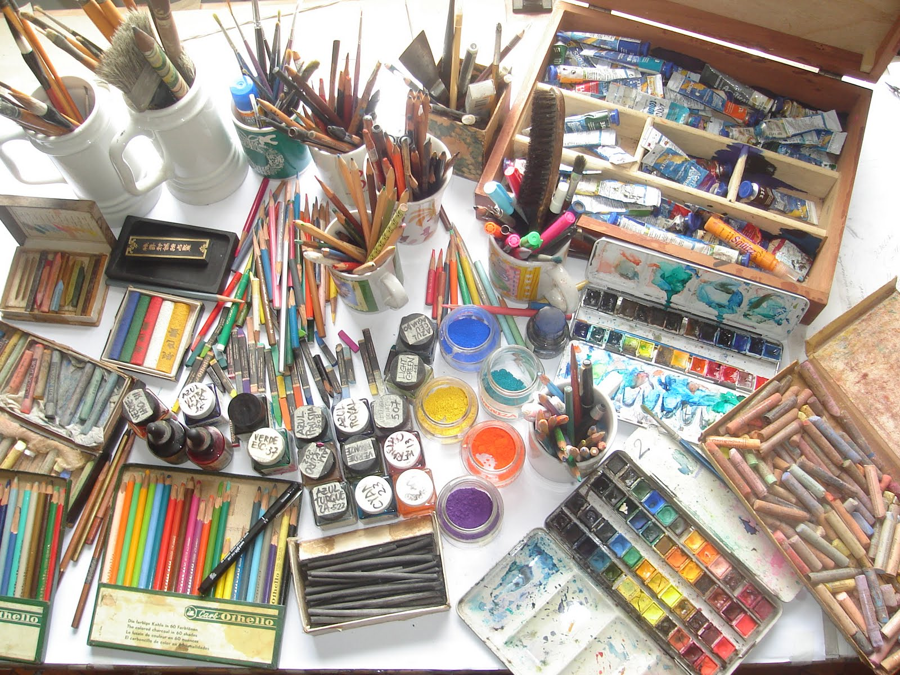
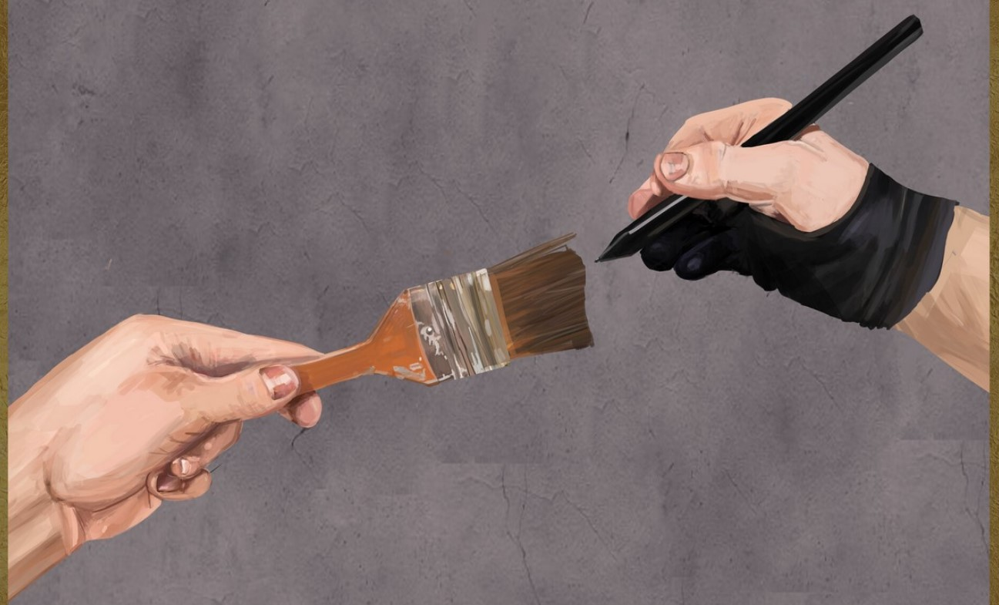

Há varios pontos a se considerar para essa decisão, aqui vai algumas dicas para te orientar nessa escolha:
Custo de Materiais:
Avalie o custo dos materiais tradicionais em comparação com o investimento inicial em equipamentos digitais. Considere também fatores como papel, tintas e lápis em comparação com tablets, softwares e acessórios digitais.
Portabilidade:
Pense na portabilidade ao escolher entre arte tradicional e digital. Materiais tradicionais são frequentemente mais portáteis, enquanto a arte digital pode ser acessada e modificada em vários dispositivos.

Reparos e Edições:
Avalie a facilidade de fazer correções e edições. A arte digital oferece a vantagem de edições rápidas e facilidade para experimentar, enquanto a arte tradicional pode exigir mais cuidado nas correções.
Preservação e Arquivamento:
Pense na durabilidade e no arquivamento de suas obras. A arte tradicional pode ser armazenada fisicamente, enquanto a arte digital requer backup e armazenamento digital.
Estilo Artístico Pessoal:
Considere seu estilo artístico pessoal. Alguns artistas preferem a autenticidade e a sensação física da arte tradicional, enquanto outros apreciam a flexibilidade e as possibilidades criativas oferecidas pela arte digital.
Sensação Tátil vs. Precisão Digital:
Considere a sensação tátil e a textura dos materiais tradicionais em oposição à precisão e versatilidade das ferramentas digitais para decidir qual se alinha melhor com suas preferências e estilo de arte.

Explore Recursos de Transformação:
Utilize ferramentas de transformação, como escala, rotação e deformação, para ajustar elementos em sua ilustração.
Compartilhamento Online vs. Exibição Física:
Considere onde você pretende exibir suas obras. A arte digital é facilmente compartilhada online, enquanto a arte tradicional pode ser exposta fisicamente em galerias ou eventos.
Preferência Pessoal:
Por fim, leve em consideração sua preferência pessoal. A escolha entre arte tradicional e digital muitas vezes se resume ao que mais se alinha com seu gosto, fluxo de trabalho e objetivos artísticos.